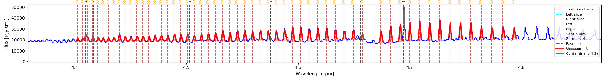
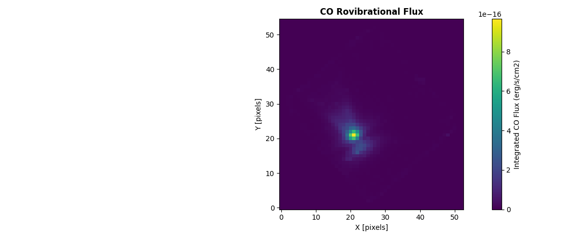
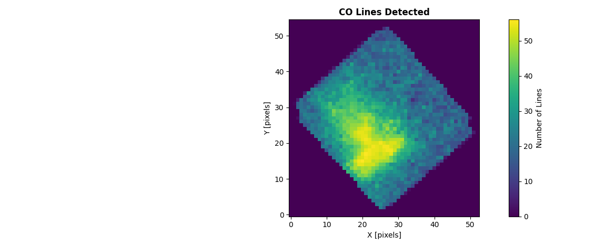
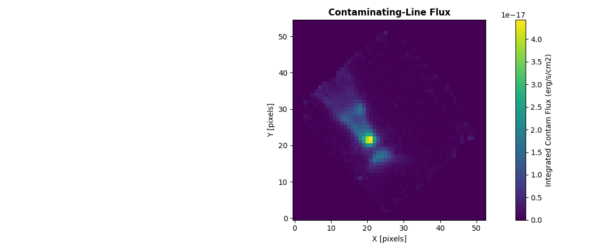
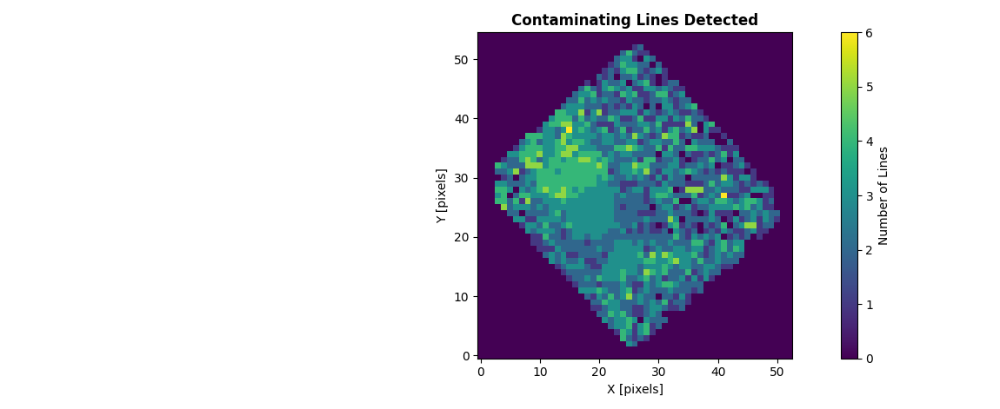
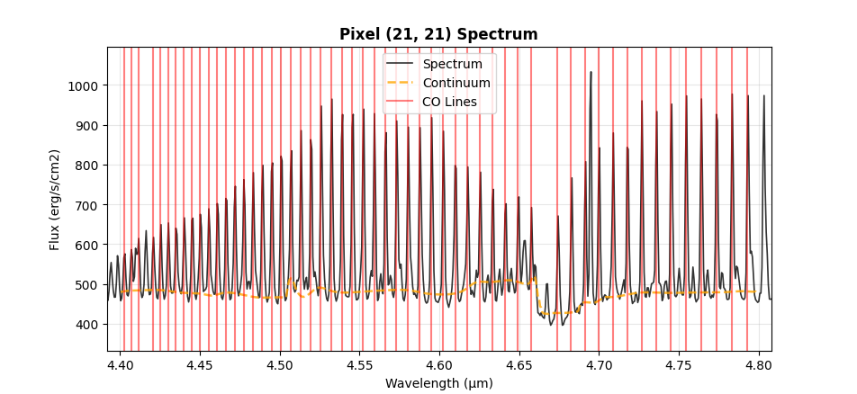

CO Flux Extraction
Extract and measure carbon monoxide (CO) line fluxes from spectral data cubes. This specialized tool analyzes CO emission or absorption across multiple rotational transitions.
Starting CO Flux Extraction
Fetch from HITRAN
Enter min/max wavelengths in the toolbar, then click HITRAN
Choose a molecule (required)
Choose isotopologue number (optional)
Choose transition level (optional, different molecules have different transition levels)
Refresh HITRAN cache (optional)
Import Lines
When HITRAN isn’t reachable, click Import Lines to load your own line list from a CSV
instead. Both wavelength and species columns are required.
Once lines are loaded (either way), the spectrum shows them. Hovering over a line shows its species, wavelength, transition, and Einstein coefficients. Click Lines to open a table of every currently loaded line: detections and contaminants together, with “Detection Only”/”Contaminating Only” filters. Check/uncheck rows to change what’s plotted.
Load Contaminating Lines
Additionally (and optionally), you can load a catalog of contaminating (non-target) lines so both CO Flux Map and Multi-Gaussian Fit (below) can account for them instead of letting their flux distort a nearby CO line’s measurement.
Click Contam. Lines and load a CSV file with unwanted lines
Both wavelength and species columns are required.
Run CO Flux Map / Multi-Gaussian Fit again after loading it for the fit to pick it up.
Multi-Gaussian Fit
Fit every currently-plotted HITRAN line at once via curve_fit, using each line’s own
instrumental width. Lines that land in the same wavelength chunk (close or blended) are fit
together against one shared continuum, so they no longer double-claim overlapping flux the
way independent, uninformed per-line fits would.
Each line’s starting width comes from the instrument’s own spectral resolution, but center and sigma are fitted, not fixed because each is constrained to a bounded range around that starting point (center within ±1 instrumental σ of the catalog wavelength, sigma within 0.5–2× the instrumental value), so a real line can settle slightly off its catalog center or resolve a little narrower/wider than nominal.
If you’ve loaded a contaminating-lines catalog (above), any contaminant sharing a wavelength chunk with a requested line gets its own Gaussian component too, so its flux is absorbed there instead of leaking into that line’s amplitude. It’s drawn in grey on the plot and listed separately in the results. It’s never counted toward the CO line total or “Total Integrated Flux”, but summed on its own as “Total Contaminant Flux” (see Reading the results below).
(Optional) Fit a continuum first via Continuum Tools → Automatic Continuum → Continuum Line. If you skip this, Multi-Gaussian Fit computes one automatically the first time you click it.
Click Multi-Gaussian Fit
A Gaussian curve is overlaid on the spectrum for each plotted line, and a results window opens with one block per line, an overall summary, and a separate section listing any contaminating lines that got their own component. Re-running with the same lines, contaminants, and active tab offers the cached results instead of re-fitting.


56 CO v=1→0 lines (4.40–4.80 µm) fitted simultaneously via Multi-Gaussian Fit on a NIRSpec G395H spectrum. The grey curves are H2 lines from the loaded contaminating-lines catalog, each fit as its own component. The tallest, near 4.69 µm, would otherwise have distorted its neighboring CO lines’ amplitudes.
Reading the results
Each line’s block reports two groups of numbers:
Catalog identification —
Line λ,Transition,A coeffandE_upper, copied straight from the HITRAN entry, not measured. Useful for cross-checking that the fit actually locked onto the line you think it did.Fitted parameters —
Center,Amplitude,Sigma,FWHM,Integrated AreaandR².CenterandSigmaare fitted, not fixed, but each is bounded around the catalog wavelength and the instrument’s spectral resolution respectively (see above). Units follow the same rules as the 1D page (1D Spectrum Fitting):Integrated Areais erg/s/cm² wherever the header supports the conversion.
An OVERALL summary follows every line block, e.g. from a real 56-line run:
OVERALL:
Total lines fitted: 56
Total Integrated Flux: 2.7085e-14 erg/s/cm²
Mean R²: 0.9768
Lines with R² >= 0.5: 56/56
Total Contaminant Flux: 2.3774e-15 erg/s/cm²
Total Contaminant Flux only appears when a contaminating-lines catalog is loaded, and is
summed separately from Total Integrated Flux (contaminants are never considered for CO
total).
A CONTAMINATING LINES section follows whenever any contaminant got its own component: wavelength, species, amplitude and area for each (not part of the CO line count or totals above). From the same run:
CONTAMINATING LINES (not part of the 56 lines above -- shown in grey on the plot):
======================================================================
1. H2 @ 4.410011 µm amplitude=6.3049e+03 MJy sr⁻¹ area=2.9563e-16 erg/s/cm²
2. H2 @ 4.416644 µm amplitude=4.0638e+03 MJy sr⁻¹ area=2.3147e-16 erg/s/cm²
3. H2 @ 4.502312 µm amplitude=1.4162e-03 MJy sr⁻¹ area=4.3696e-23 erg/s/cm²
4. H2 @ 4.575760 µm amplitude=2.8655e+03 MJy sr⁻¹ area=9.2912e-17 erg/s/cm²
5. H2 @ 4.655038 µm amplitude=1.7061e+03 MJy sr⁻¹ area=2.0365e-16 erg/s/cm²
6. H2 @ 4.694877 µm amplitude=3.3151e+04 MJy sr⁻¹ area=1.5537e-15 erg/s/cm²
Using the API
from cube_explorer.api import load_cube, fit_hitran_lines
from cube_explorer.line_catalog import load_contaminating_lines_catalog
cube = load_cube("data.fits")
contam = load_contaminating_lines_catalog("path/to/ContaminatingLines.csv") # optional
results = fit_hitran_lines(
wavelength=cube.wavelength,
spectrum=cube.spectrum,
molecule='CO',
wavelength_min=4.40,
wavelength_max=4.80,
v_upper=1, # v=1->0, same filter as the HITRAN dialog
v_lower=0,
header=cube.header, # Required for the erg/s/cm2 conversion
wave_unit=cube.wave_unit,
contam_catalog=contam, # omit (or None) to skip contaminant handling entirely
)
detected = [r for r in results if r['success']]
print(f"Fitted {len(detected)}/{len(results)} lines")
for r in sorted(detected, key=lambda r: r['wavelength']):
print(f" {r['wavelength']:.6f} um area={r['area']:.4e} {r['area_unit']} R2={r['r_squared']:.4f}")
Fitted 56/56 lines
4.402940 um area=1.7523e-16 erg/s/cm² R2=0.9522
4.407340 um area=2.0514e-16 erg/s/cm² R2=0.9760
4.411409 um area=3.2444e-16 erg/s/cm² R2=0.9919
...
4.773897 um area=5.4440e-16 erg/s/cm² R2=0.9945
4.783681 um area=5.0950e-16 erg/s/cm² R2=0.9889
4.793562 um area=5.5141e-16 erg/s/cm² R2=0.9156
Analyze CO for All Pixels
Extract a CO flux map across every spatial pixel:
Click on CO Flux Map.
A popup explains that continuum subtraction runs automatically per pixel, using default parameters that work well for typical spectra. Click No to use those defaults, or Yes to open the same parameter dialog as the manual Automatic Continuum tool and set your own values instead.
A preview shows the brightest pixel within your wavelength range (a sanity check before committing to a full-cube run). Click YES - Extract Map to proceed.
If you’ve already run an extraction with the same wavelength range and continuum choice, you’ll be offered the cached results instead of re-running.
Progress Monitoring
The progress dialog updates per pixel as the cube is processed.
Output Products
The Display dropdown in the results window switches between four maps, all from the same run:


CO Flux: integrated CO flux per pixel.


Detection Count: number of CO lines detected per pixel, for the same cube.


Contam Flux: integrated contaminating-line flux per pixel, computed as part of the same per-pixel fit and summed separately from CO flux (never mixed into the CO total).


Contam Detection Count: number of contaminating lines detected per pixel.
Export as FITS / Show Statistics buttons in the results window apply to whichever map is currently selected.
Inspecting Individual Pixels
With Pixel Select on (the default), clicking a pixel on any of the four maps opens that pixel’s fit:


Spectrum for an individual pixel, zoomed to the run’s fitted wavelength range (here the full 4.40–4.80 µm, 56-line CO band), with the real per-chunk fitted continuum trend and every detected CO line marked in red.
Turn Pixel Select off to zoom/pan the map freely instead of reopening this dialog on every click.
Using the CO Flux API
Extract CO fluxes programmatically for single spectra or full data cubes, using
extract_co_flux() and create_co_flux_map(), the same algorithm as the GUI’s
CO Flux Map button.
Note
This is a different algorithm from Multi-Gaussian Fit, and the two don’t produce
identical totals for the same spectrum. Both now fit lines simultaneously via the same
function, so the real remaining difference isn’t the fitting method itself, it’s which
lines get fit: extract_co_flux/create_co_flux_map auto-detect lines per pixel and
only count one that clears a signal-to-noise threshold first (snr_threshold, default
3σ). fit_hitran_lines has no SNR gate at all: it fits whatever you selected, weak
lines included. Summed over many pixels this adds up to CO Flux Map running
systematically lower. Lowering snr_threshold would let more noise into the flux
instead (a trade-off, not a fix).
Extract CO Flux from a Single Spectrum
from cube_explorer.api import load_cube, extract_co_flux
cube = load_cube("data.fits")
co_result = extract_co_flux(
wavelength=cube.wavelength,
spectrum=cube.spectrum,
co_catalog_path="path/to/CO_catalog.ecsv",
header=cube.header, # Required for the erg/s/cm2 conversion
wave_unit=cube.wave_unit,
)
print(f"Total CO flux: {co_result['co_flux']:.4e} {co_result['flux_unit']}")
print(f"Number of lines detected: {len(co_result['detected_lines'])}")
print(f"Mean continuum level: {co_result['mean_continuum']:.3f}")
Create CO Flux Maps
Generate flux maps for the entire data cube:
from cube_explorer.api import load_cube, create_co_flux_map
cube = load_cube("data.fits")
# Uses HITRAN automatically by default, or pass co_catalog_path for a custom catalog
co_flux_map = create_co_flux_map(
cube,
wavelength_min=4.70, wavelength_max=4.80,
n_jobs=4,
)
print(f"CO flux map shape: {co_flux_map['flux_map'].shape}, unit: {co_flux_map['flux_unit']}")
print(f"Mean CO flux: {co_flux_map['flux_map'][co_flux_map['flux_map'] > 0].mean():.4e}")
print(f"Pixels with CO detection: {(co_flux_map['detection_map'] > 0).sum()}")
print(f"Pixels with a contam detection: {(co_flux_map['contam_detection_map'] > 0).sum()}")
print(f"Mean contam flux: {co_flux_map['contam_flux_map'][co_flux_map['contam_flux_map'] > 0].mean():.4e}")
Continuum subtraction works the same way as extract_co_flux above (automatic per
pixel, with the default parameters unless you pass your own via continuum_params).
Expected Catalog Format
The CO catalog file should be in ECSV (Enhanced Character Separated Values) format with columns:
line_wave_um: Wavelength in micrometersspecies: Molecule name (e.g., “CO”)transition: Transition description (e.g., “v=1->0, J=4->5”)a: Einstein A coefficient
Columns are loaded as-is, with no validation: a file missing line_wave_um or
species won’t fail at load time, only later inside the fit, as a KeyError.
Tips for CO Flux Extraction
Ensure your wavelength calibration is accurate (errors affect line identification)
The algorithm automatically measures line widths and integrates flux
For more control over individual line fits, use
fit_hitran_lines()instead
Next Steps
Pixel-by-Pixel Cube Fitting — the general per-pixel Gaussian fitting this shares its algorithm with
Exporting Data — other export paths
2D FITS Dual Image Viewer — open the exported CO/contam flux maps with WCS support